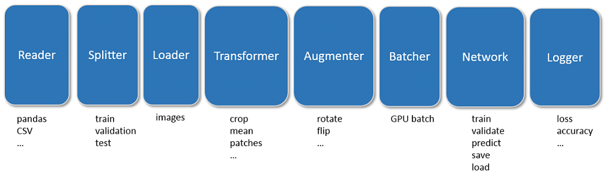
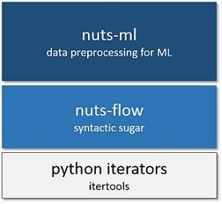

Introduction¶
Deep-learning code is characterized by
- data pre-processing on CPU and training on GPU
- mix of common and task-specific pre-processing steps
- training in epochs
- mini-batches of training data
- data transformation such as scaling, cropping and others
- data augmentation to increase amount of training data
- check-pointing of network weights
- logging of training progress
nuts-ml provides generic components, so called nuts that implement these functions and can be arranged in task-specific data processing pipelines. This leads to more readable and robust code that can be modified easily, which is in contrast to the monolithic, unstructured code often found for data pre-processing.
Below an (incomplete) example of a typical pipeline for network training
with nuts-ml. The >> operator defines the flow of data through the
pipeline
t_loss = (train_samples >> PrintProgress(train_samples) >>
augment >> rerange >> Shuffle(100) >>
build_batch >> network.train() >> Mean())
print "training loss :", t_loss
Canonical pipeline¶
A canonical pipeline for the processing of image data can be described by the following components
- Reader: sample data stored in CSV files, Pandas tables, databases or other data sources is read,
- Splitter: samples are split into training, validation and sets, and stratified if necessary,
- Loader: image data is loaded for each sample when needed,
- Transformer: images are transformed, e.g. cropped or resized,
- Augmenter: images are augmented to increase data size by random rotations, flipping, changes to contrast, or others,
- Batcher: the transformed and augmented images are organized in mini-batches for GPU processing,
- Network: a neural network is trained and evaluated on the GPU,
- Logger: the network performance (loss, accuracy, ...) is logged or plotted.
Depending on the specific application, the mode (training, testing, evaluation, ...) or data type (image, video, text) some of the processing steps will differ, others will remain the same, but in general many components (nuts) can be shared.
Library¶
nuts-ml is a library that provides common data-processing and machine learning components as nuts. It is based on nuts-flow, which itself is largely based on Python iterators and the itertools library.
nuts-flow wraps iterators and itertool functions into nuts that provide a
>> operator, which enables the composition of iterators in pipelines.
For instance, a nested itertool expression such as the following
>>> list(islice(ifilter(lambda x: x > 5, xrange(10)), 3))
[6, 7, 8]
can be flattened and more clearly written with nuts-flow as
>>> Range(10) >> Filter(_ > 5) >> Take(3) >> Collect()
[6, 7, 8]
nuts-ml extends nuts-flow with nuts specifically designed for machine learning and (image) data processing. The following code example shows a nuts-ml pipeline with image transformation, image augmentation, batching, network training, evaluation and check-pointing.
Example¶
rerange = TransformImage(0).by('rerange', 0, 255, 0, 1, 'float32')
build_batch = (BuildBatch(BATCH_SIZE)
.by(0, 'image', 'float32')
.by(1, 'one_hot', 'uint8', NUM_CLASSES))
p = 0.1
augment = (AugmentImage(0)
.by('identical', 1.0)
.by('brightness', p, [0.7, 1.3])
.by('color', p, [0.7, 1.3])
.by('shear', p, [0, 0.1])
.by('fliplr', p)
.by('rotate', p, [-10, 10]))
network = create_network()
train_samples, test_samples = load_samples()
for epoch in range(NUM_EPOCHS):
t_loss, t_acc = (train_samples >> PrintProgress(train_samples) >>
augment >> rerange >> Shuffle(100) >>
build_batch >> network.train() >> Unzip())
print("train loss :", t_loss >> Mean())
print("train acc :", 100 * (t_acc >> Mean()))
e_acc = test_samples >> rerange >> build_batch >> network.evaluate([categorical_accuracy])
print("test acc :", 100 * e_acc)
The complete code and more examples can be found under nutsml/examples . See the tutorial for a detailed explanation of the code.